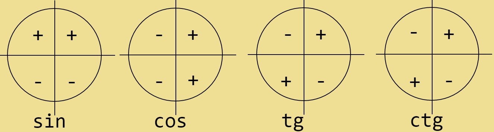

Для базовой и профильной!
1.Решение квадратных уравнений:
Квадратное уравнение имеет вид:
f(x)=ax2+bx+c
1.1Решение квадратных уравнение через дискриминант
D=b2+4ac После того, как нашли дискриминат, перейдём к нахождению корней уравнения
X1=-b+√ D 2a
X2=-b-√ D 2a
1.1.1 В случае, если дискриминант D<0, корней нет.
1.1.2 В случае если дискриминнт равен нулю, корень один
(Но это и так очевидно, зависимость дискриминанта в формулах теряется)
1.2 Теорема Виета:
Сумма корней (Которые являются решением уравнения) равна его второму коэффициенту b взятого с противоположным знаком (т.е. -b), а произведение (т.е. умножение) корней равно c
Если не понятно что такое a b и c, смотрите как выглядит Квадратное уравнение.
Пример:
Дано квадратное уравнение x2-5x+6=0
Решение по теореме Виета:
x1+x2=-b
x1x2=c
Тоесть:
x1+x2=5
x1x2=6
Подберём значения x1 и x2 которые удовлетворяют эти равенствам:
x1=2 и x2=3
Эти значения и являются корнями уравнения
1. Приведения тригонометрических функций, мнеманическое правило:
а) Перед приведённой функцией нужно поставить тот знак, который имеет исходная функция.
Знаки функций на еденичной окружности:
Cos положителен от
Пи2 до -Пи2 (справа).
Sin положителен от 0 до Пи (сверху).
tg и ctg от 0 до Пи и от Пи до 3Пи2
